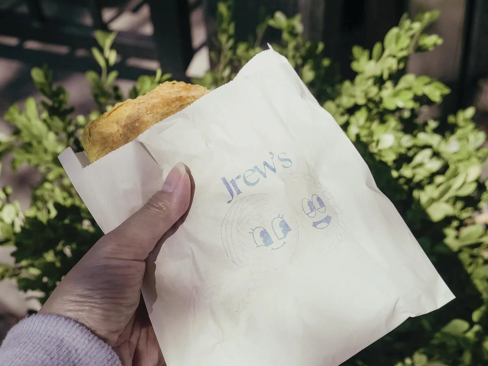
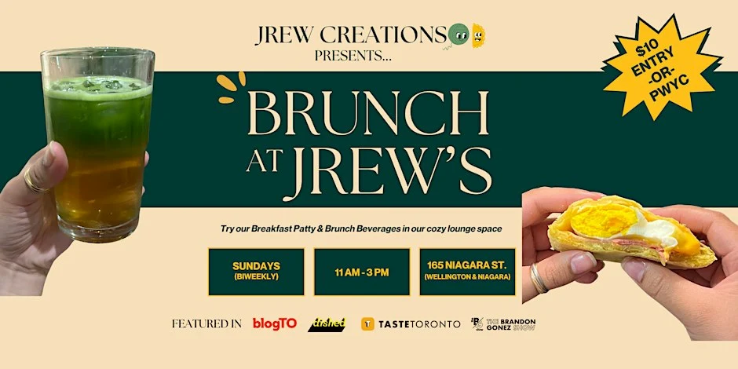
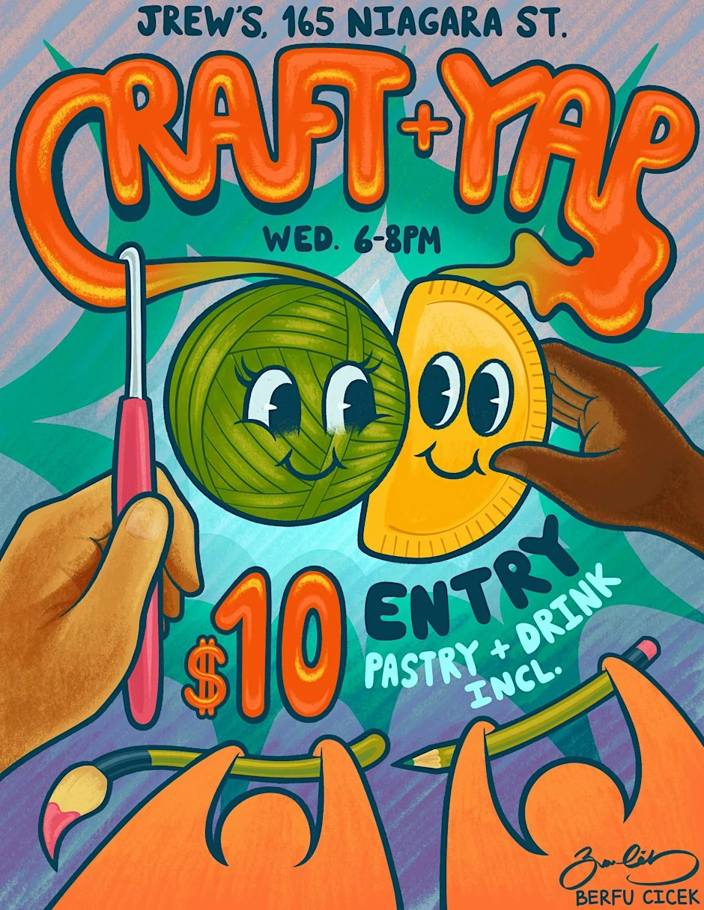
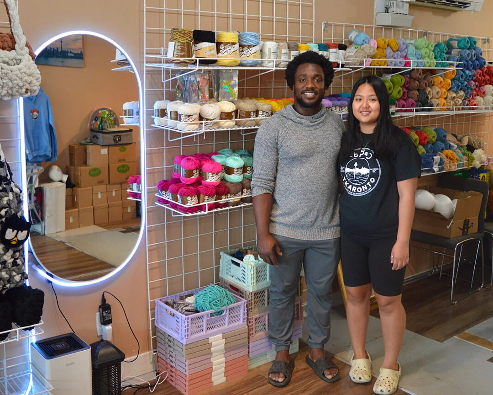

Beef
The classic with a spicy kick.
MEATCROCHET CREATIONS ✳ CULINARY SENSATIONS
Handmade Jamaican patties. One-of-a-kind crochet. A little corner of Toronto where creativity brings us together.

Flaky outside. Full of flavour inside.
01 / THE CULINARY SENSATIONS
Pick your patty personality. Our rotating selection brings Jamaican flavours to a golden, handmade crust.
See today’s menu on Uber Eats

Showing all flavours
Flavours rotate. Check the ordering page for current availability and prices. Please contact us about ingredients and allergies before ordering.

WEAR YOUR CREATIVITY.02 / THE CROCHET CREATIONS
Colour, texture and a whole lot of personality. Handmade crochet accessories and fashion that let you show up as yourself.
03 / JAIME + ANDREW = JREW
One brings the crochet.
One brings the patties.
Together, they bring the people.
Founded in 2022 by Jaime Aludos and Andrew Foster, Jrew grew from Toronto pop-ups into a home for food, fashion and connection.
Andrew’s cooking draws on his Jamaican roots. Jaime’s crochet carries a connection to her great-grandmother. Different crafts, the same care in every piece.
Read their story in West End Phoenix04 / PULL UP A CHAIR
Bring your creativity and meet your community. Find upcoming gatherings through Jrew’s official event links.
05 / YOUR TORONTO CORNER
Toronto, ON M5V 1C6
Get directionsCheck Instagram or message us for today’s opening hours and what’s fresh.